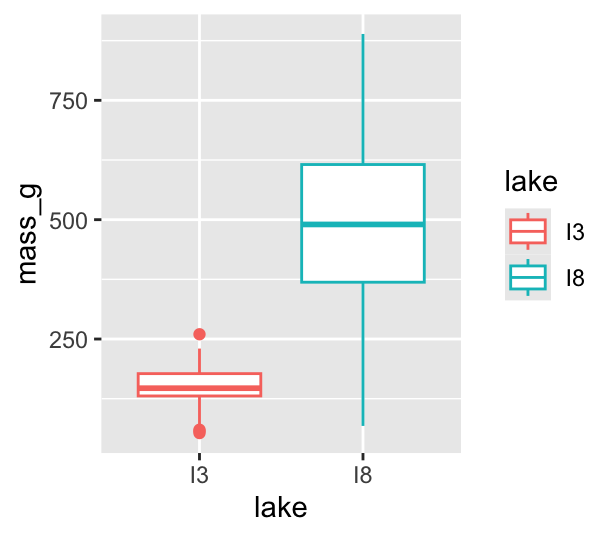
Lecture: Correlation vs Linear Models
Relationships
Regression
Correlation
Correlation vs. regression, the Pearson and Spearman correlation coefficients, simple linear regression, testing regression assumptions, and ANOVA for regression — using the Nazca booby, lion nose-pigmentation, and prairie-biodiversity textbook examples.
Where We Left Off
Covered last time:
- Study design
- Causality in ecology
- Experimental design: replication, controls, randomization, independence
- Sampling in field studies
- Power analysis: a priori and post hoc
- Study design and analysis
Part 1 · Overview
Today’s Objectives
This lecture covers two fundamental statistical techniques in biology: correlation and regression analysis. Based on Chapters 16–17 from Whitlock & Schluter’s The Analysis of Biological Data (3rd edition), we’ll explore:
- Correlation analysis: measuring relationships between variables
- The distinction between correlation and regression
- Simple linear regression: predicting one variable from another
- Estimating and interpreting regression parameters
- Testing assumptions and handling violations
- Analysis of variance in regression
- Model selection and comparison
Note
📖 Reference
Whitlock & Schluter, Ch. 16 (Correlation) and Ch. 17 (Regression) are the core references for this entire lecture.
Part 2 · Correlation vs. Regression
Correlation vs. Regression — What’s the Difference?
Correlation Analysis:
- Measures the strength and direction of a relationship between two numerical variables
- Both X and Y are random variables (both measured, neither manipulated)
- Variables are typically on equal footing (either could be X or Y)
- No cause-effect relationship implied
- Quantifies the degree to which variables are related
- Expressed as a correlation coefficient (r) from −1 to +1
Regression Analysis:
- Predicts one variable (Y) from another (X)
- X is often fixed or controlled (manipulated)
- Y is the response variable of interest
- Often implies a cause-effect relationship
- Produces an equation for prediction, with slope and intercept parameters

Part 3 · Correlation Analysis
What Is Correlation?
Correlation analysis measures the strength and direction of a relationship between two numerical variables:
- Ranges from −1 to +1
- +1 indicates perfect positive correlation
- 0 indicates no correlation
- −1 indicates perfect negative correlation
The Pearson correlation coefficient (r) is defined as:
\[r = \frac{\sum_{i}(X_i - \bar{X})(Y_i - \bar{Y})}{\sqrt{\sum_{i}(X_i - \bar{X})^2 \sum_{i}(Y_i - \bar{Y})^2}}\]
This can be simplified as:
\[r = \frac{\text{Covariance}(X, Y)}{s_X \cdot s_Y}\]
Where \(s_X\) and \(s_Y\) are the standard deviations of X and Y.
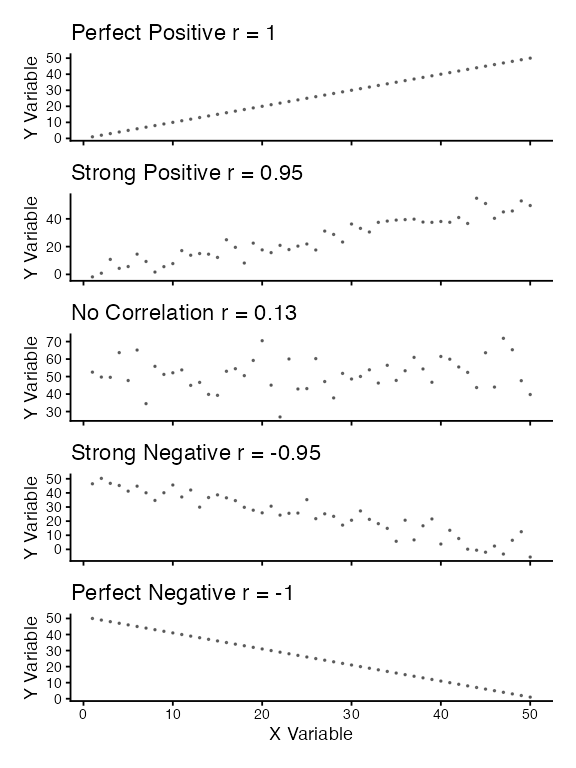
Example 16.1: Flipping the Bird
Nazca boobies (Sula granti) — do aggressive behaviors as a chick predict future aggressive behavior as an adult?
- Correlation is r = 0.534 — a moderate positive relationship
- p-value = 0.007 — correlation is statistically significant
For a Pearson correlation coefficient (r) of 0.53372:
- This is r (not ρ, as Spearman’s below), as indicated by “cor” in your output
- To determine the amount of variation explained, square this value: r² = 0.53372² = 0.2849 (≈ 28.49%)
- Means about 28.49% of the variance in one variable can be explained by the other
Tested by a t-test: \(\text{t}=\frac{r}{SE_r}\)
Pearson's product-moment correlation
data: booby_data$visits_as_nestling and booby_data$future_aggression
t = 2.9603, df = 22, p-value = 0.007229
alternative hypothesis: true correlation is not equal to 0
95 percent confidence interval:
0.1660840 0.7710999
sample estimates:
cor
0.5337225 Example 16.1: Interpretation
Interpretation: the correlation coefficient of r = 0.534 suggests that Nazca boobies who experienced more visits from non-parent adults as nestlings tend to display more aggressive behavior as adults. This supports the hypothesis that early experiences influence adult behavior patterns in this species.
Standard error:
\[\text{SE}_r = \sqrt{\frac{1-r^2}{n-2}}\]
SE = 0.180
Need to be sure the relationship is not curved — see below.

Testing Assumptions for Correlation
Note
🔮 Predict first: We’re about to run Shapiro-Wilk on both booby variables, then look at their histograms and QQ plots. If the formal test and the visual check disagree, which would you trust more for n = 24?
As described in Section 16.3, correlation analysis has key assumptions:
- Random sampling — observations should be a random sample from the population
- Bivariate normality — both variables follow a normal distribution, and their joint distribution is bivariate normal
- Linear relationship — the relationship between variables is linear, not curved
Let’s check these assumptions with the booby data.
Shapiro-Wilk normality test
data: booby_data$visits_as_nestling
W = 0.95783, p-value = 0.3965
Shapiro-Wilk normality test
data: booby_data$future_aggression
W = 0.91575, p-value = 0.04709Testing Assumptions for Correlation — Visually
As described in Section 16.3, correlation analysis has key assumptions:
- Random sampling — observations should be a random sample from the population
- Bivariate normality — both variables follow a normal distribution, and their joint distribution is bivariate normal
- Linear relationship — the relationship between variables is linear, not curved
Let’s check these assumptions using the booby data.

What to Do If Assumptions Are Violated
- Transform one or both variables (log, square root, etc.)
- Use a non-parametric correlation (Spearman’s rank correlation) or Kendall’s tau (τ)
- Examine the data for outliers or influential points
Tip
🖐 Notice
The lion nose-pigmentation data (used here just as an example of non-normal data) shows a right-skewed proportion_black and clearly non-normal QQ plots — this is exactly when Spearman’s is the better tool.
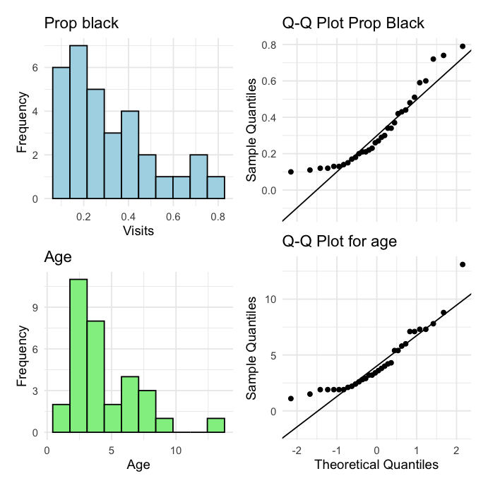
Spearman’s Rho — Interpretation
To understand the amount of variation explained, you can square the non-parametric Spearman’s rho value.
For your value of 0.74485:
\[\rho^2 = 0.74485^2 = 0.5548\]
This means approximately 55.48% of the variance in the ranks of one variable can be explained by the ranks of the other. This is similar to how R² works in linear regression, but specifically for ranked data.
Spearman's rank correlation rho
data: lion_data$proportion_black and lion_data$age_years
S = 1392.1, p-value = 1.013e-06
alternative hypothesis: true rho is not equal to 0
sample estimates:
rho
0.7448561 Correlation — Important Considerations
- The correlation coefficient depends on the range
- Restricting the range of values can reduce the correlation coefficient
- Comparing correlations between studies requires similar ranges of values
- Measurement error affects correlation
- Measurement error in X or Y tends to weaken observed correlation
- This bias is called attenuation
- True correlation is typically stronger than the observed correlation
- Correlation vs. Causation
- Correlation does not imply causation
- Three possible explanations: (1) X causes Y, (2) Y causes X, (3) Z (a third variable) causes both X and Y
- Correlation significance test
- H₀: ρ = 0 (no correlation in population); H₁: ρ ≠ 0
- Test statistic: t = r / SE(r), with df = n − 2

Part 4 · Linear Regression — the Model
The Simple Linear Regression Model
Simple linear regression models the relationship between a response variable (Y) and a predictor variable (X).
The population regression model: \(Y = \alpha + \beta X + \varepsilon\)
- Y is the response variable
- X is the predictor variable
- α (alpha) is the intercept (value of Y when X = 0)
- β (beta) is the slope (change in Y per unit change in X)
- ε (epsilon) is the error term (random deviation from the line)
The sample regression equation: \(\hat{Y} = a + bX\)
- \(\hat{Y}\) is the predicted value of Y; a estimates α; b estimates β
Method of least squares: the line is chosen to minimize the sum of squared vertical distances (residuals) between observed and predicted Y values.
Note
📖 Reference
Whitlock & Schluter, Ch. 17 — Regression, is the primary reference for the rest of this lecture.

The Simple Linear Regression Model — the Lion Data
Simple linear regression models the relationship between a response variable (Y) and a predictor variable (X).
The population regression model: \(Y = \alpha + \beta X + \varepsilon\)
The sample regression equation: \(\hat{Y} = a + bX\)
Method of least squares: the line is chosen to minimize the sum of squared vertical distances (residuals) between observed and predicted Y values.

Example 17.1 — the Lion Regression Equation
From Example 17.1 in the textbook, the regression line for the lion data is:
\[\text{age} = 0.88 + 10.65 \times \text{proportion}_{black}\]
This means:
- When a lion has no black on its nose (proportion = 0), its predicted age is 0.88 years
- For each 0.1 increase in the proportion of black, age increases by 1.065 years
- The slope (10.65) indicates that lions with more black on their noses tend to be older
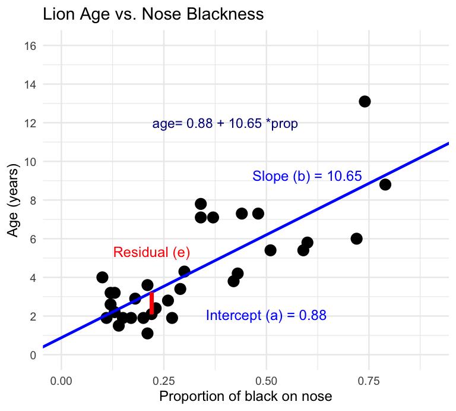
Male Lions and Nose Pigmentation
- Male lions develop more black pigmentation on their noses as they age
- This relationship can be used to estimate the age of lions in the field
Call:
lm(formula = age_years ~ proportion_black, data = lion_data)
Residuals:
Min 1Q Median 3Q Max
-2.5449 -1.1117 -0.5285 0.9635 4.3421
Coefficients:
Estimate Std. Error t value Pr(>|t|)
(Intercept) 0.8790 0.5688 1.545 0.133
proportion_black 10.6471 1.5095 7.053 7.68e-08 ***
---
Signif. codes: 0 '***' 0.001 '**' 0.01 '*' 0.05 '.' 0.1 ' ' 1
Residual standard error: 1.669 on 30 degrees of freedom
Multiple R-squared: 0.6238, Adjusted R-squared: 0.6113
F-statistic: 49.75 on 1 and 30 DF, p-value: 7.677e-08Calculating the Slope and Intercept by Hand
The calculation for slope (m) is:
\[m = \frac{\sum_i(X_i - \bar{X})(Y_i - \bar{Y})}{\sum_i(X_i - \bar{X})^2}\]
Given:
- \(\bar{X} = 0.3222\)
- \(\bar{Y} = 4.3094\)
- \(\sum_i(X_i - \bar{X})^2 = 1.2221\)
- \(\sum_i(X_i - \bar{X})(Y_i - \bar{Y}) = 13.0123\)
b = 13.0123 / 1.2221 = 10.647
Intercept: \(b = \bar{Y} - m\bar{X} = 4.3094 - 10.647(0.3222) = 0.879\)

Making Predictions
To predict the age of a lion with 0.50 proportion of black on its nose:
\[\hat{Y} = 0.88 + 10.65(0.50) = 6.2 \text{ years}\]
Confidence intervals vs. prediction intervals:
- Confidence interval — range for the mean age of all lions with 0.50 black
- Prediction interval — range for an individual lion with 0.50 black
Both intervals are narrowest near \(\bar{X}\) and widen as X moves away from the mean.

Example: the Prairie Home Companion
- Does biodiversity affect ecosystem stability?
- Tilman et al. (2006) investigated this using experimental plots varying in plant species number
Call:
lm(formula = log_stability ~ species_number, data = prairie_data)
Residuals:
Min 1Q Median 3Q Max
-0.82774 -0.25344 -0.00426 0.27498 0.75240
Coefficients:
Estimate Std. Error t value Pr(>|t|)
(Intercept) 1.252629 0.041023 30.535 < 2e-16 ***
species_number 0.025984 0.004926 5.275 4.28e-07 ***
---
Signif. codes: 0 '***' 0.001 '**' 0.01 '*' 0.05 '.' 0.1 ' ' 1
Residual standard error: 0.3433 on 159 degrees of freedom
Multiple R-squared: 0.149, Adjusted R-squared: 0.1436
F-statistic: 27.83 on 1 and 159 DF, p-value: 4.276e-07Analysis of Variance Table
Response: log_stability
Df Sum Sq Mean Sq F value Pr(>F)
species_number 1 3.2792 3.2792 27.829 4.276e-07 ***
Residuals 159 18.7358 0.1178
---
Signif. codes: 0 '***' 0.001 '**' 0.01 '*' 0.05 '.' 0.1 ' ' 1The Prairie Model — Interpretation
The hypothesis test asks whether the slope equals zero:
- H₀: β = 0 (species number does not affect stability)
- H₁: β ≠ 0 (species number does affect stability)
t = estimate / SE
Interpretation:
The slope estimate is 0.033, indicating that log stability increases by 0.033 units for each additional plant species in the plot.
The p-value is very small (2.73e-10), providing strong evidence to reject the null hypothesis that species number has no effect on ecosystem stability.
R² = 0.222, meaning approximately 22.2% of the variation in log stability is explained by the number of plant species.
This supports the biodiversity-stability hypothesis: more diverse plant communities have more stable biomass production over time.
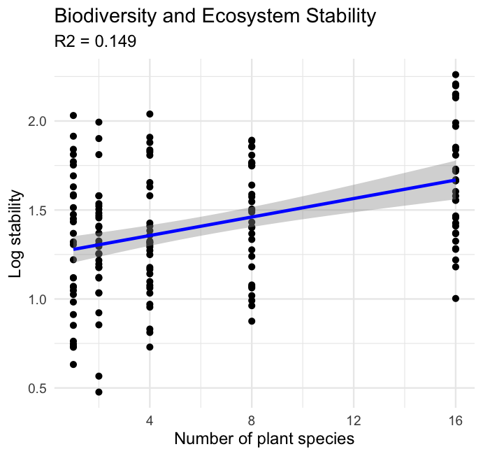
Part 5 · Testing Regression Assumptions
Testing Regression Assumptions — Overview
Linear regression has four key assumptions:
- Linearity — the relationship between X and Y is linear
- Independence — observations are independent
- Homoscedasticity — equal variance across all values of X
- Normality — residuals are normally distributed
Let’s check these assumptions for the lion regression model.
Assume that error \(\varepsilon_i\) is normally distributed for each x_i, has the same variance, and has a mean of 0 at each x_i.

Testing Regression Assumptions — Residuals
Linear regression has four key assumptions: linearity, independence, homoscedasticity, and normality.
Let’s check these assumptions for the lion regression model.
The error \(\varepsilon_i\) is estimated as the residual: \(e_i = y_i - \hat{y}_i\)
Ordinary least squares estimates a and b (intercept and slope) to minimize the sum of the residuals squared:
\[\sum_{i=1}^{n} (y_i - \hat{y}_i)^2\]
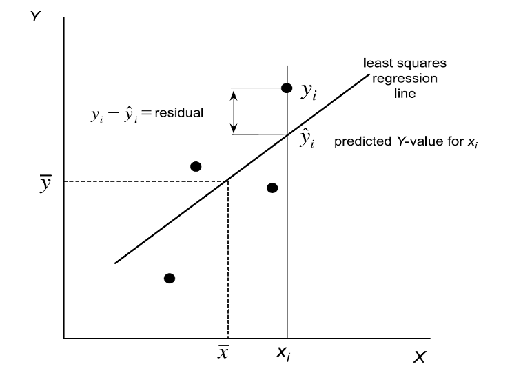
Checking Linearity — Residuals vs. Fitted
Linear regression has four key assumptions: linearity, independence, homoscedasticity, and normality.
Let’s check these assumptions for the lion regression model. Linearity — how does this plot work?

Checking Normality — QQ Plot of Residuals
Linear regression has four key assumptions: linearity, independence, homoscedasticity, and normality.
Let’s check these assumptions for the lion regression model.
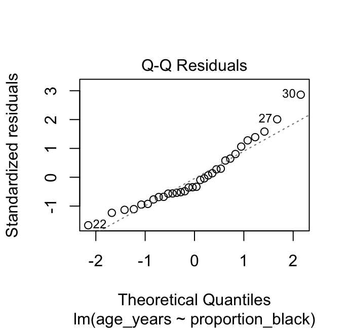
Checking Normality — Shapiro-Wilk on Residuals
Linear regression has four key assumptions: linearity, independence, homoscedasticity, and normality.
Let’s check these assumptions for the lion regression model.
Shapiro-Wilk normality test
data: residuals(lion_model)
W = 0.93879, p-value = 0.0692When Assumptions Are Violated
Linear regression has four key assumptions: linearity, independence, homoscedasticity, and normality.
If assumptions are violated:
- Transform the data (Section 17.6)
- Use weighted least squares for heteroscedasticity
- Consider non-linear models (Section 17.8)

Part 6 · Regression Inference & ANOVA
Estimates of Error and Significance
- Estimates of standard error and confidence intervals for slope and intercept determine confidence bands
- The 95% confidence band will contain the true population line 95/100 times under repeated sampling
- This is usually done in R
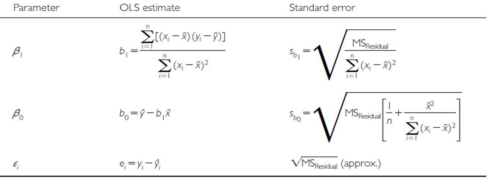
From Estimates to Hypothesis Tests
In addition to getting estimates of population parameters (β₀, β₁), we want to test hypotheses about them.
- This is accomplished by analysis of variance
- Partition variance in Y: due to variation in X, and due to other things (error)
Note
📖 Reference
Gotelli & Ellison, A Primer of Ecological Statistics, Ch. 9 — Regression, covers this variance-partitioning approach to testing a regression slope.
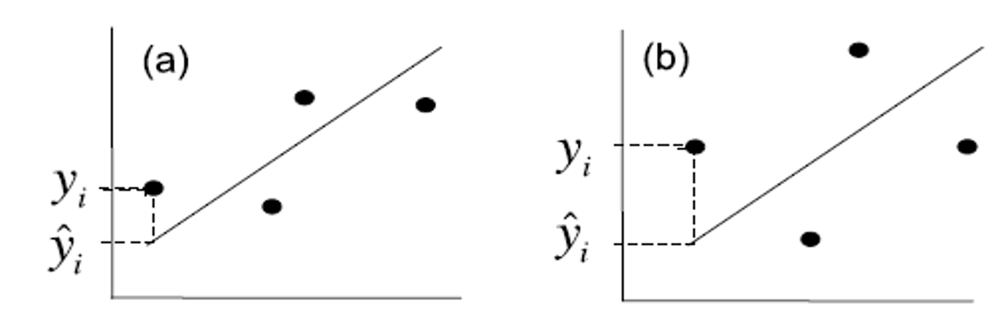
Partitioning the Variance
Total variation in Y is “partitioned” into 3 components:
- \(SS_{regression}\): variation explained by regression — difference between predicted values (\(\hat{y}_i\)) and mean y (\(\bar{y}\)); df = 1 for simple linear (parameters − 1)
- \(SS_{residual}\): variation not explained by regression — difference between observed (\(y_i\)) and predicted (\(\hat{y}_i\)) values; df = n − 2
- \(SS_{total}\): total variation — sum of squared deviations of each observation (\(y_i\)) from the mean (\(\bar{y}\)); df = n − 1
Partitioning the Variance — Visually
Total variation in Y is “partitioned” into 3 components:
- \(SS_{regression}\): variation explained by regression — df = 1 for simple linear
- \(SS_{residual}\): variation not explained by regression — df = n − 2
- \(SS_{total}\): total variation — df = n − 1
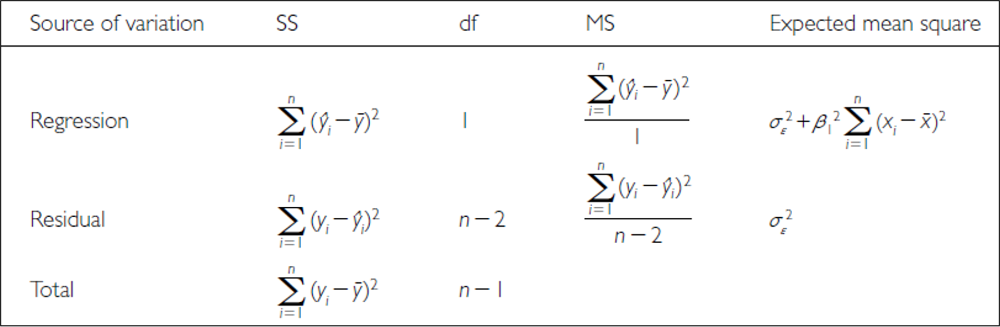
Comparing Regression Fits
Total variation in Y is “partitioned” into 3 components:
- \(SS_{regression}\): greater in C than D
- \(SS_{residual}\): greater in B than A
- \(SS_{total}\): total variation
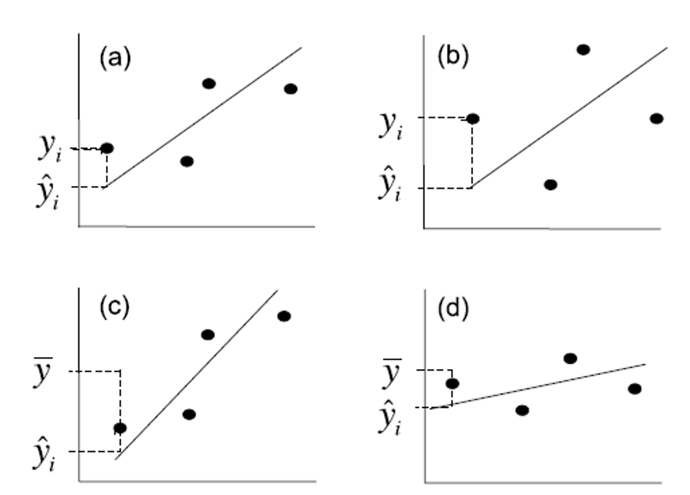
Sums of Squares and Degrees of Freedom
\[SS_{regression} + SS_{residual} = SS_{total}\] \[df_{regression} + df_{residual} = df_{total}\]
- Sums of squares depend on n
- We need a different estimate of variance
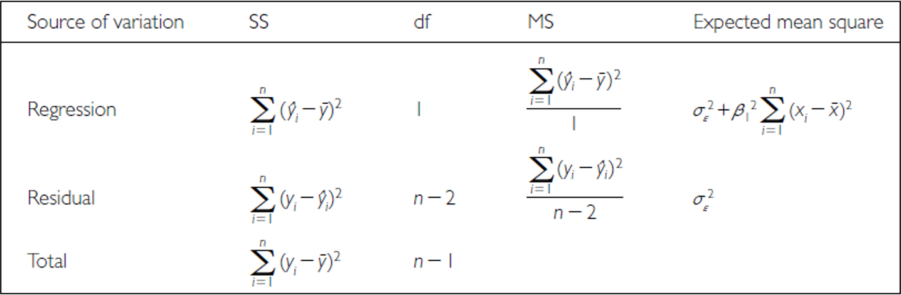
From Sums of Squares to Mean Squares
Sums of squares converted to mean squares:
- Sums of squares divided by degrees of freedom — does not depend on n
- \(MS_{residual}\): estimates population variation
- \(MS_{regression}\): estimates population variation and variation due to the X-Y relationship
- Mean squares are not additive
Note
✅ Key idea
The F-ratio in a regression ANOVA table is exactly \(MS_{regression} / MS_{residual}\) — the same logic you’ll see again when we get to ANOVA for group comparisons.